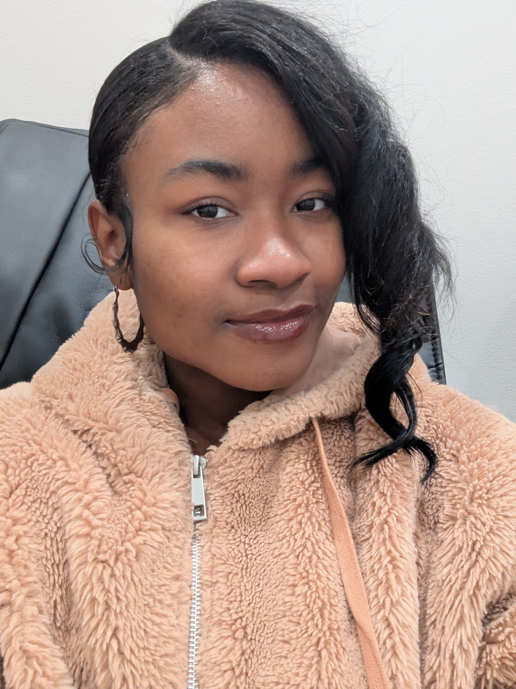
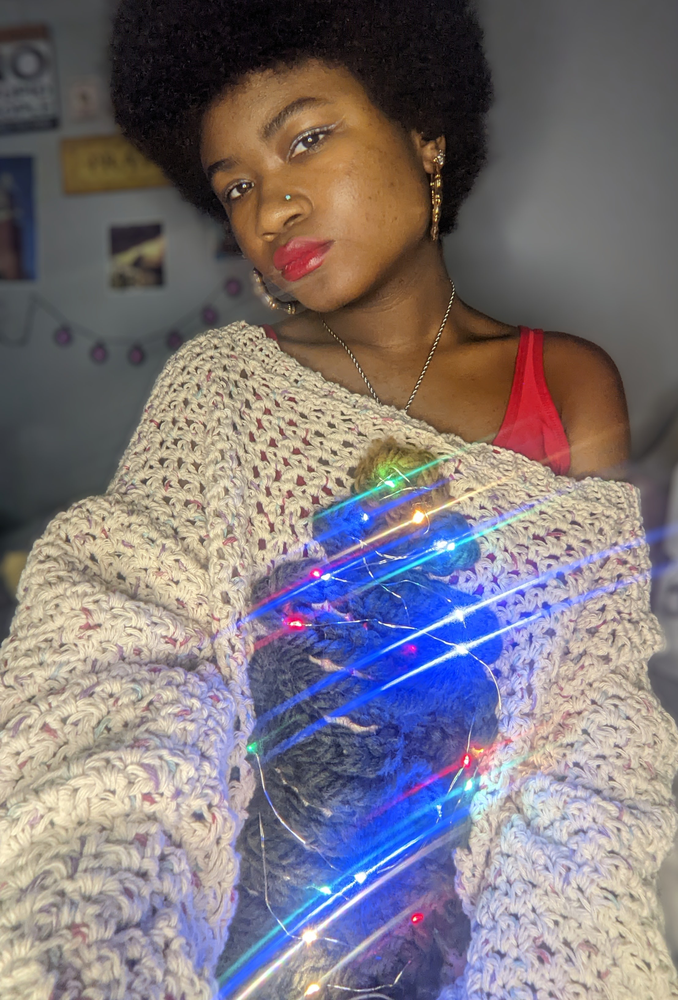
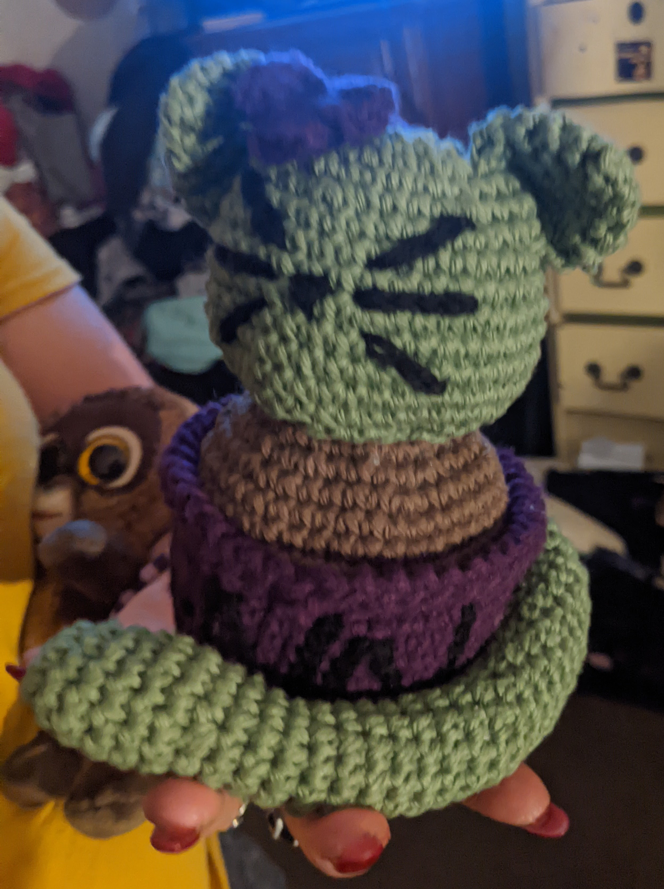
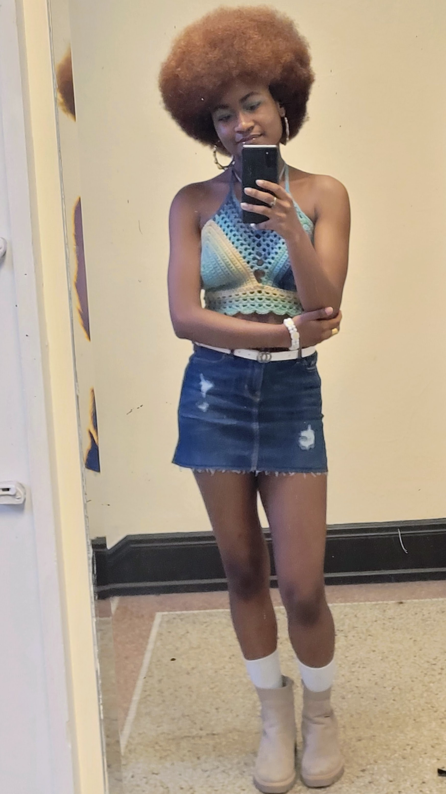
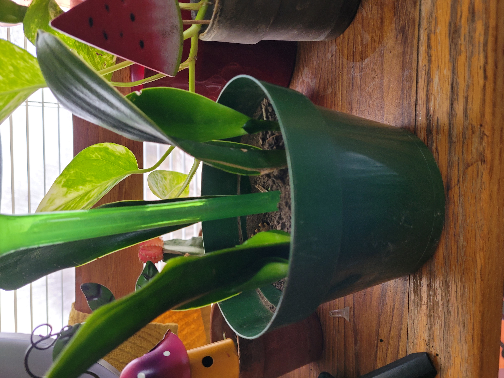
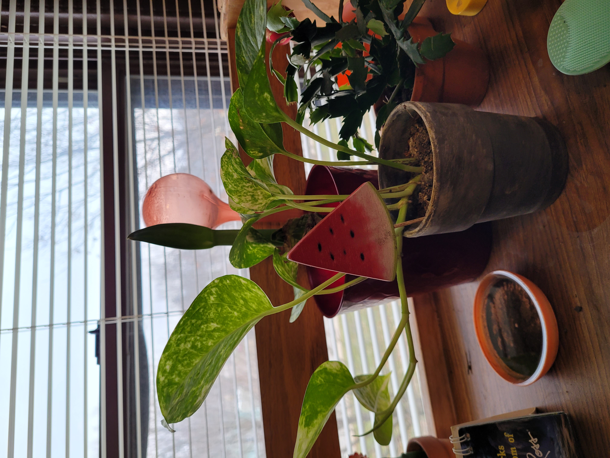
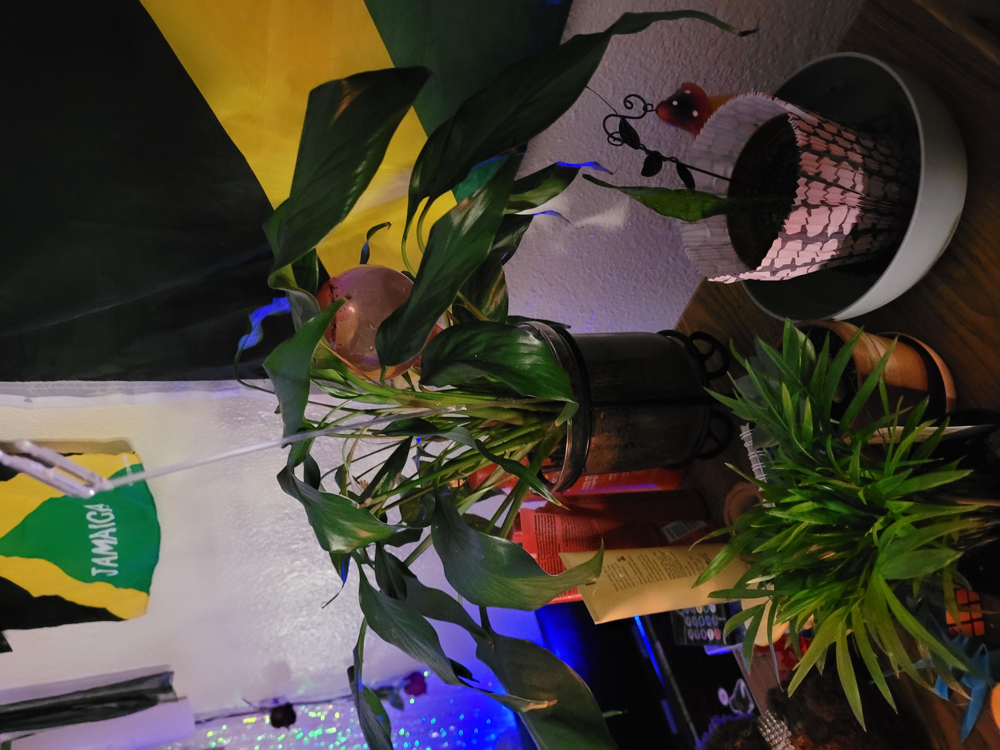
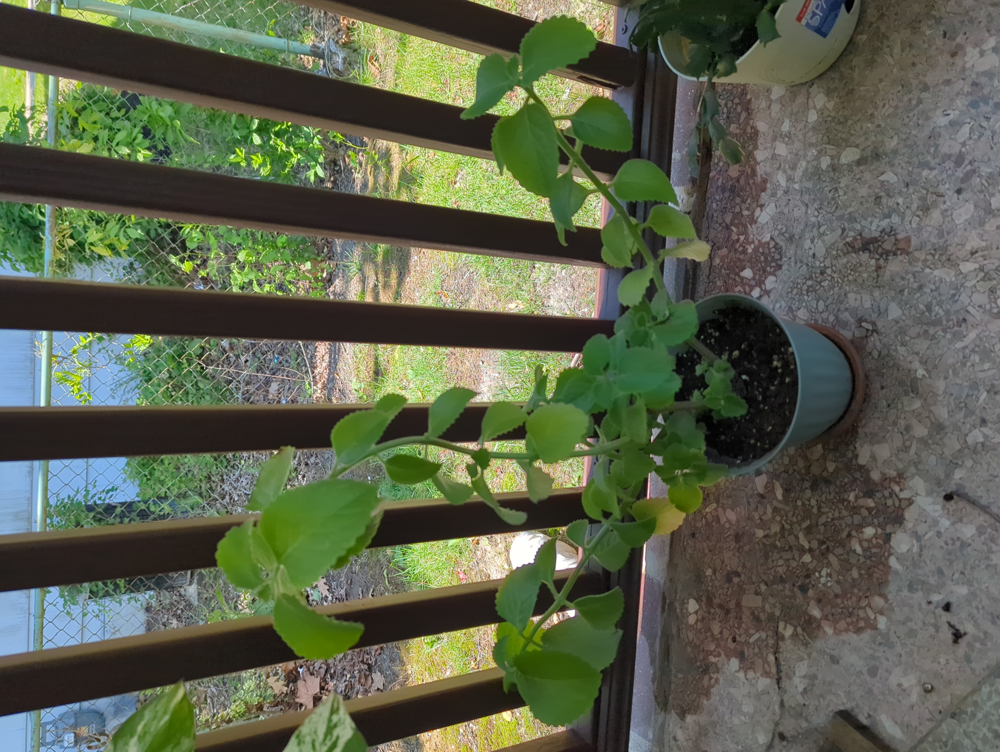
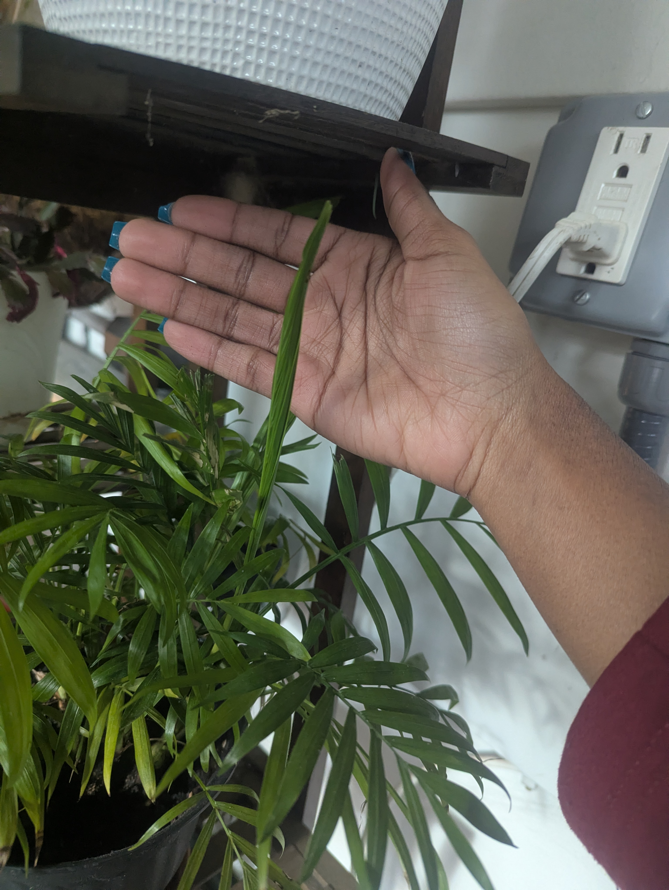
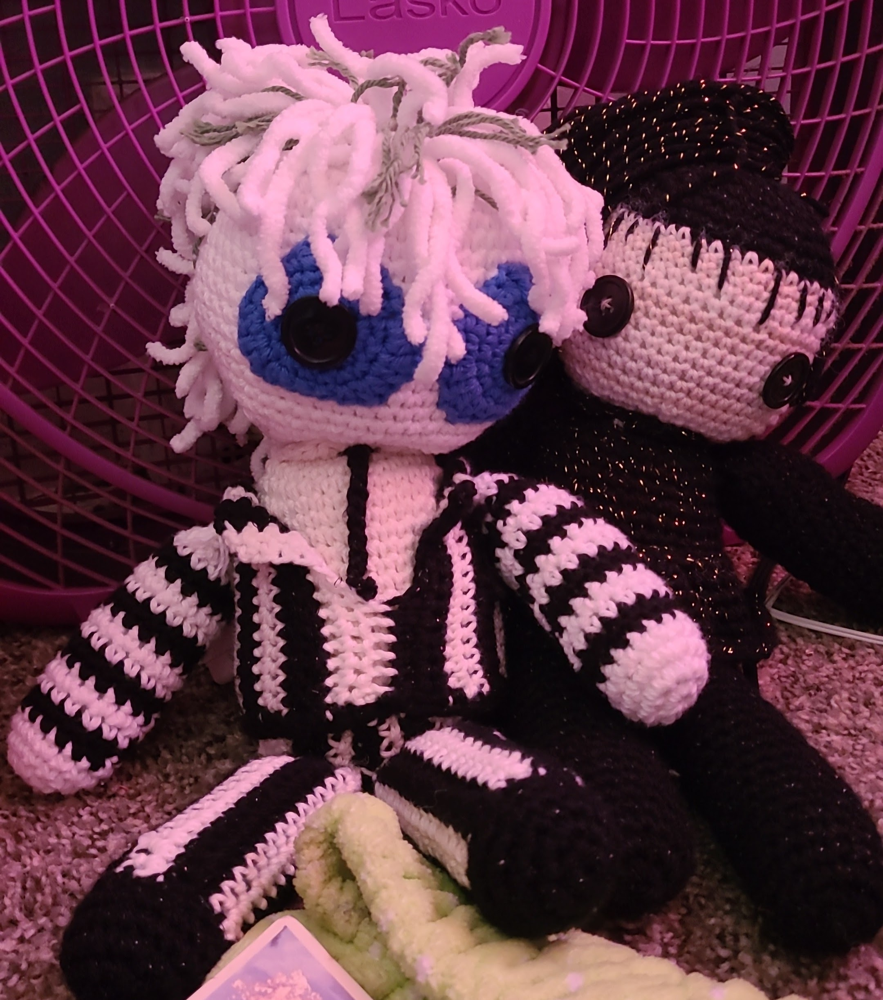

Hyattsville, MD | zamijahcst116@gmail.com | +1 856-842-8342 | LinkedIn | Github

Hello! My name is Zamijah Shakeur-Tompkins and I am a Junior Computer Science major at Howard University from Camden, New Jersey. I serve as the Executive Intern for the Howard University Water Environment Association as well as the Secretary for One of a Kind. In my major, I've taken courses in cloud computing, data analysis, and ultimately learned how to be a better programmer in whatever sector I decide to go into. Throughout my journey, I've found myself trying to use technology for everything, because I thought it was what was expected of me as a CompSci student. But that just isn't the case, and now as I complete Technical Writing, I've found new ways to add writing into my career and every day life. I've gotten better at writing tasks and goals down, documenting my code more descriptively, have learned how to better articulate myself in a professional setting, and overall I learned how to become a more efficient writer.
After graduating, I plan to go straight into work. I want to work in cybersecurity and have been considering what different fields I can go into. I've been really considering going into law enforcement, or even the army or aerospace. I always wanted to found a cybersecurity company so other companies and businesses won't have to worry about cybersecurity, but I do believe I should get some more experience first. Also with how long I've worked in education, I've been considering coming back to my old schools and teaching computer science to my community.
| Project Name | Core Technologies | Key Focus | Link |
|---|---|---|---|
| Boggle Game | Java, Data Structures | Algorithmic Efficiency | View Code |
| Simple AI Chatbot | Python, NLP | Knowledge Management | View Code |
| Lexical Analyzer | C++, Compilers | Pattern Matching | View Code |
Started freshman year at CCTS-GTC majoring in Information Technology. Was reached out by my cousin that summer about working in STEM.
Graduated from high school with an AA in Liberal Arts from Camden County College in New Jersey. Started my higher education journer at Grinnell College in Iowa and starting serving as lead instructor for the third level scholars for the Camden Dream Center.
Transferred to Howard University to be closer to home and develop my computer science knowledge in a new environment.
Became Secretary for One of a Kind and Executive Intern for HUWEA. Started taking Codepath courses alongside my current classes to supplement my learning.
Being at Howard I've gotten the chance to be surrounded by black excellence. I grew up with my only representation being bad characters and having my beauty be defined by my external looks, but being at Howard has shown me that my beauty is rather defined by my intelligence. Being a Bison means connecting with like minded individuals myself, not just on an intellectual level but a cultural and familial one as well.
My three main hobbies are coding, crocheting, and gardening~








